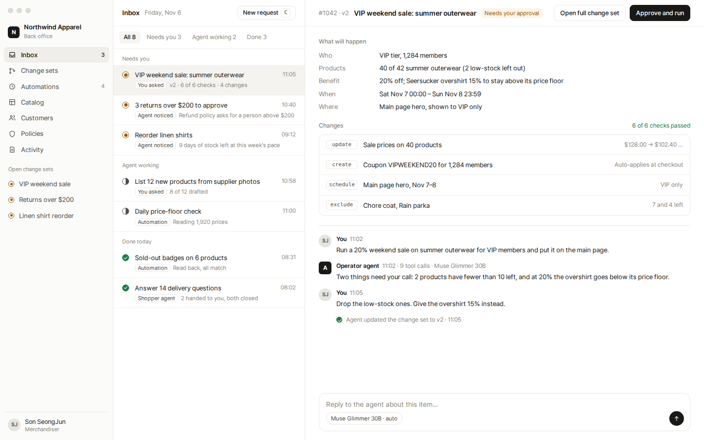
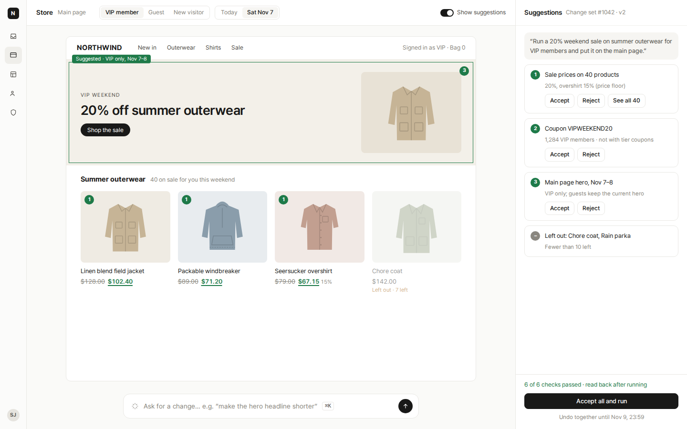
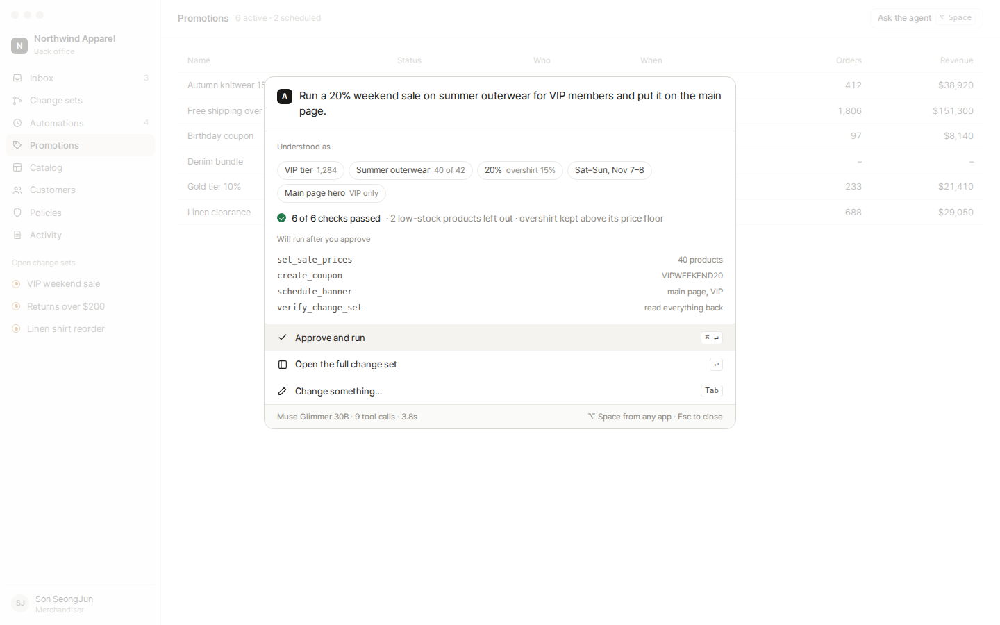
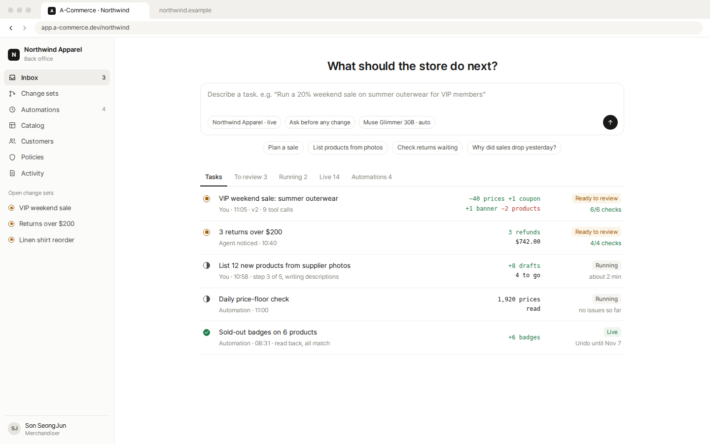

One request in every option: “Run a 20% weekend sale on summer outerwear for VIP members and put it on the main page.”
AConversation + work panelChat left, change set right. Claude artifacts, Codex.

BInbox firstWork items are the unit; conversation lives inside each. Linear, Superhuman.

CStore canvas with suggestionsEdit the store you see; changes as suggestions. Google Docs suggesting, Shopify theme editor.

DCommand bar (desktop)Ask from any app; approve without leaving. Raycast AI, ChatGPT desktop launcher.

ERequest box + task list (web)Many agent tasks in parallel, reviewed like pull requests. Codex web, GitHub PRs.
Same parts in every optionChange set with interpretation, checks, grouped changes, preview, read-back, undo together.Status circles: needs you · agent working · done.Model and tool calls visible on every agent step.Web vs desktopAll five run in both. Desktop adds a global shortcut (D) and system notifications when something needs you.